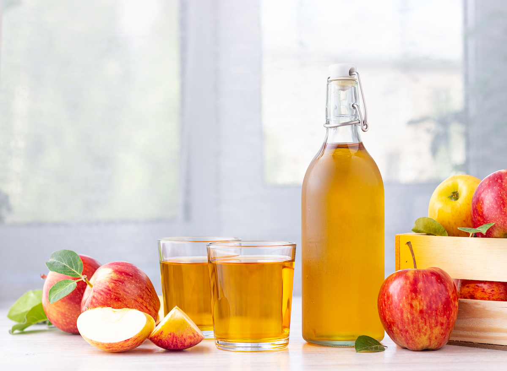
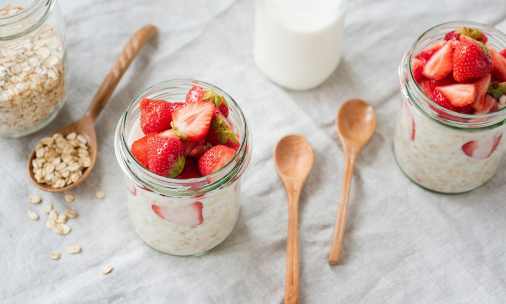
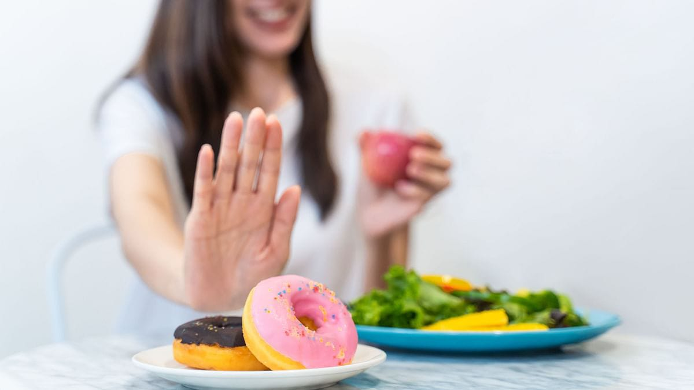
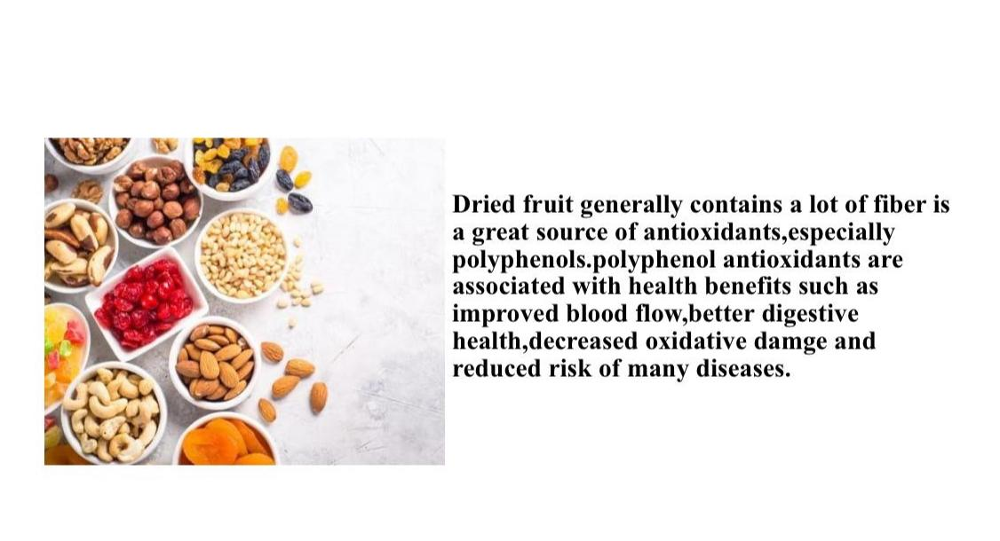
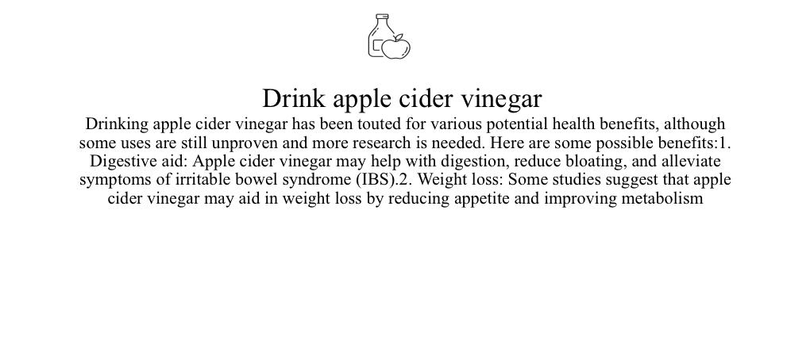
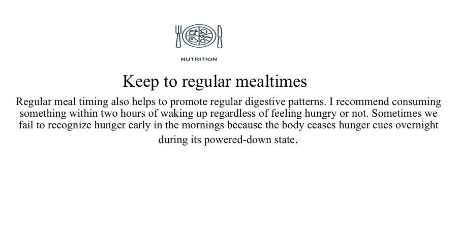
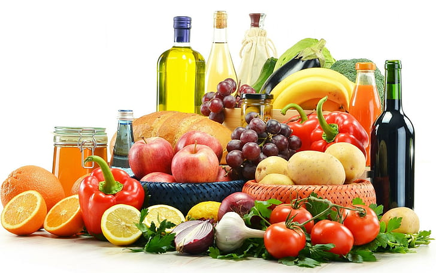
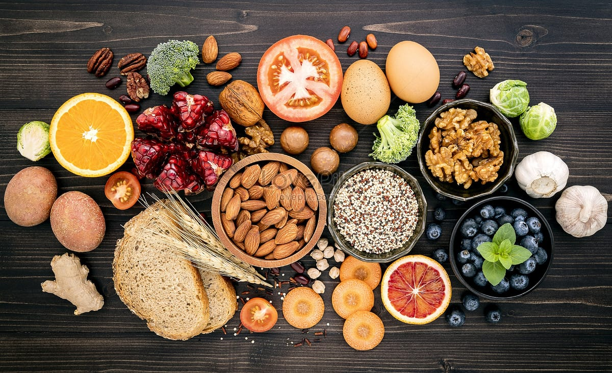
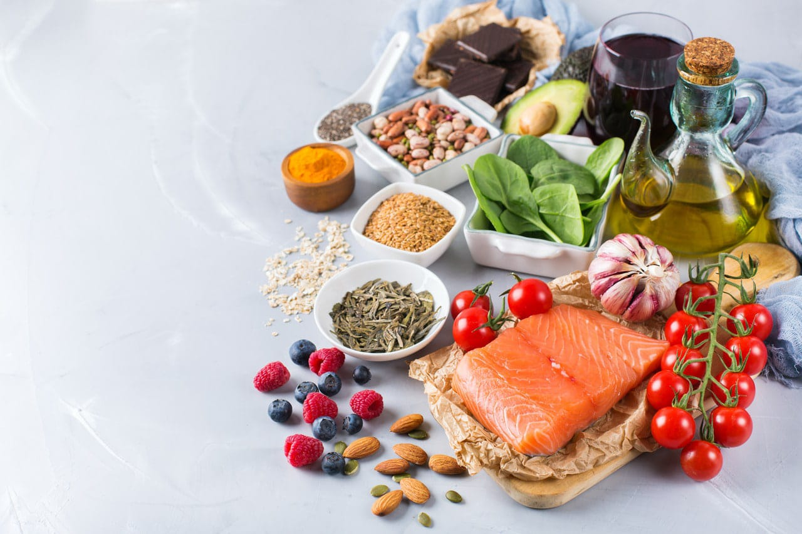
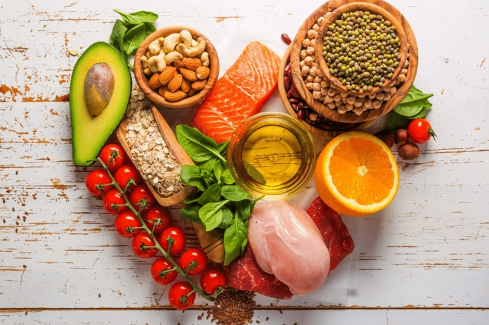

As we go about our hectic, busy days, it can be very easy to restore to a sugary snack midway through the afternoon to keep your energy level elevated.
IMAGES:




NEW IDEAS OF LIFE
While it is important to have naturally occuring sugars in your diet, many foods contain harmful added sugars that contain no nutritional value. According to a study conducted by the University of Florida, the brain releases heroin-like chemical called endogenous opioids when an individual indulges on sweet, salty or fatty foods.
HEALTH IS THE MOST PRECIOUS
While it is important to have naturally occurring sugars in your diet, many foods contain harmful added sugars that contain no nutrition value.
According to a study conducted by the University of Florida, the brain releases heroin-like chemicals called endogenous opioids when an individual indulges on sweet, salty or fatty foods. With that in mind, mastering control over your sugar crawings is evidently far easier said than done.






AVOID SUGARY FOOD
Sugary foods and drinks
Overall, the problem with too much sugar is that it tends to mean your diet will be high in calories (energy) and this can lead to putting on weight. Excess weight increases the chances of developing type 2 diabetes and heart and circulatory diseases.
Not all foods containing sugars are the same. Fruit or dairy products contain natural sugars but are nutritious foods that contain vitamins, minerals and in some cases fibre.
What we need to cut down on are free sugars, which include added sugars, syrups, or juices. They’re “free” because they’re not naturally within the food, either because they’re added, or they’re released from the cells of fruit when it’s cooked, or when it’s processed into juices, smoothies and purees. It’s recommended that we eat less than 30g (1oz) of free sugars each day, but most of us are eating more than this.